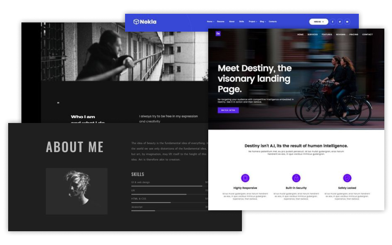
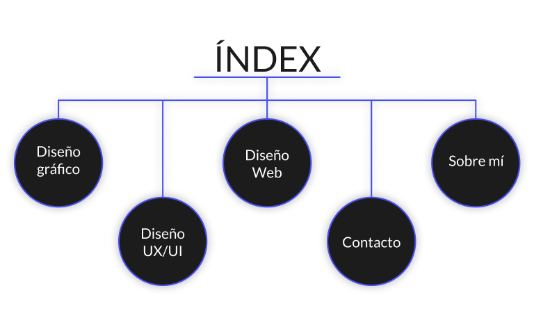
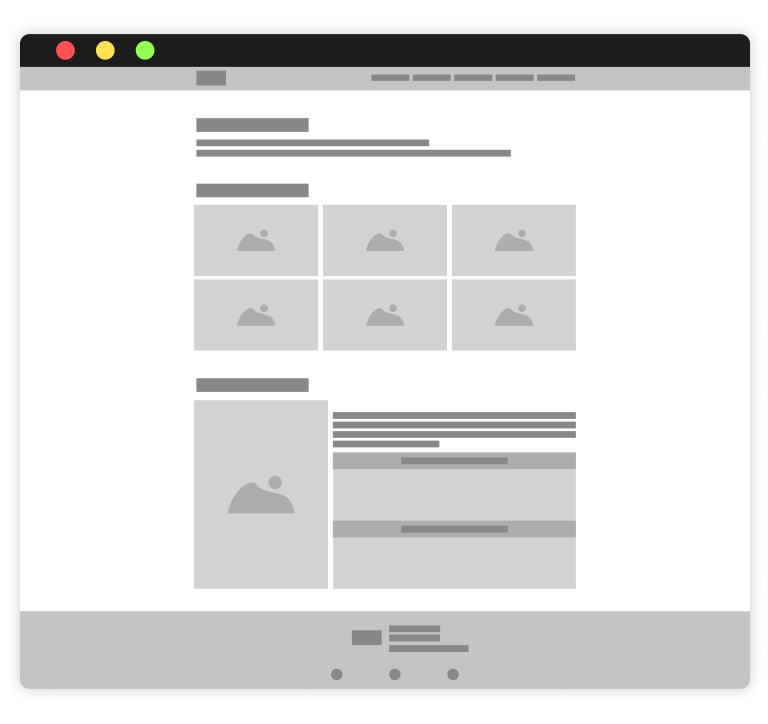
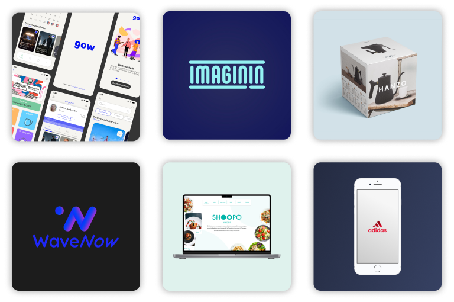
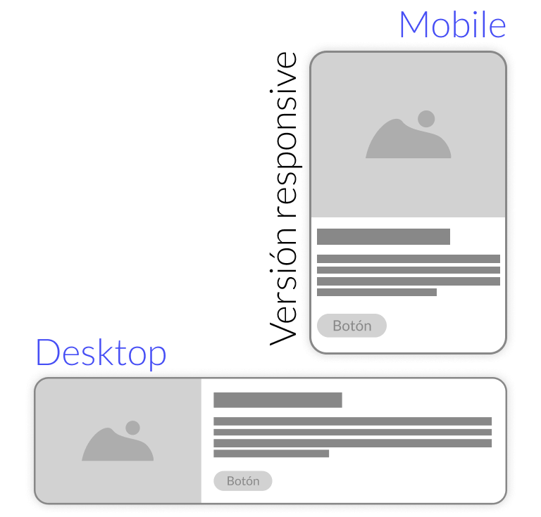

Proyecto: ISM Design
Para el proyecto final del módulo de diseño web del CEI: escuela de diseño y marketing, decidí elaborar mi propia web en la que poder enseñar mis proyectos. Además lo presento como mi propio espacio donde mostrar las cosas que me gustan y soy capaz de hacer.

Planteamiento
Lo primero que hice fue coger inspiración de otras webs o portfolios para tener una perspectiva de qué era lo que me podía funcionar y qué debía descartar como idea.

Sitemap
A continuación planteé todas las pantallas que iba a necesitar mi web, poniendo en el foco que se mostrara de manera rápida y sencilla cómo se había planteado el proyecto en cuestión.
Tambíen quise catalogar los proyectos en tres ramas:
- Diseño gráfico
- Diseño UX/UI
- Diseño Web

index.html
Por algo hay que empezar, ¿no?
Lo primero que hice fue el esqueleto de la web que consta de: header, main y footer. Prescindí del elemento aside ya que este no tenía ningún uso ni relevancia a nivel de contenido práctico. A continuación distribuí la web en tres secciones: la bienvenida e introducción de la web, una galería con los proyectos más recientes y, por último, un pequeño apartado sobre mí.

Proyectos
A la hora de plantear los proyectos decidí ser pragmático y crear una hoja de estilo para todas. De esta manera, permitía a todas las entradas mantener la misma estructura.
Para el diseño lo enfoqué como si de una landing se tratara: con un banner lo más dinámico posible con el método de trasladar la imagen en el centro de su contenedor. De esta manera, el ancho y el alto original se quedan fijos para que así mantenga la máxima calidad de imagen.
Otro de los puntos destacables de estas páginas es la inserción de vídeos en los que se puede ver de manera gráfica el comportamiento del proyecto en vivo.

Categorías
En las categorías quería crear unas tarjetas que representen un card de producto de ecommerce y que a su vez fueran dinámicas teniendo una versión para móviles vertical y para anchos superiores horizontal.